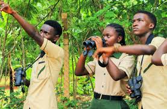

WH0 ARE WE
Uganda Tourism Hub ia a digital project created to promote and celebrate Uganda's natural beauty diverse culture and growing tourism potential. the platfoem serves as a one stop source of information for local and international travelors who wish to explore the peral of Africa.Our mission is to highlight Uganda's landscape,wildlife and traditions while encouraging sustainable travel that supports local communication
Uganda is more than just a destination it is an experience from the snow capped peaks of mount rwenzori to the vast waters of Lake Victoria and the mighty River Nile Uganda offers breath taking scenary and uniqe adventure opportunities through this project we aim to connect people to these attractions and inspire to Uganda's beauty and heritage
OUR MISSION AND VISSION
Our vision is to make Uganda a leading tourism destination in Africa by treatures.The Uganda Tourism Hub provides updated information about tourist sites, cultural events and conseravation effoerts that preserve the country's natural environment. We believe that tourism can be a positive force that empowers communities supports local business and protects wildlife for future generations
WHY UGANDA
Uganda stands out because of it's incredibale diversity.It is home to over fifty ethinic groups each with unique traditions, music and cuisines the warm hospitality of Ugandans, combined with beautiful landscape and remarkable wildlife makes it one of Africa's most rewarding destinations wheather you're interested in gorilla tracking cultural festivals or scenic safaris, Uganda has something for everyone
